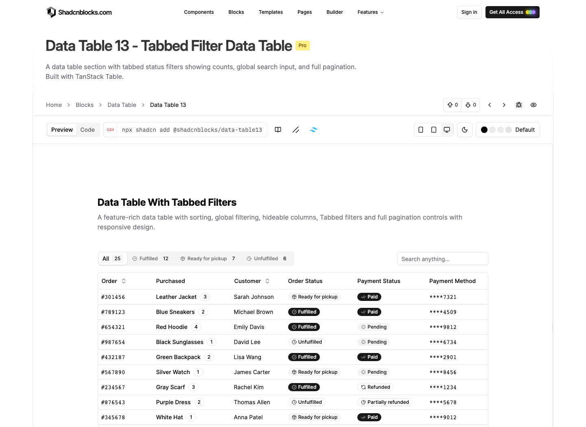
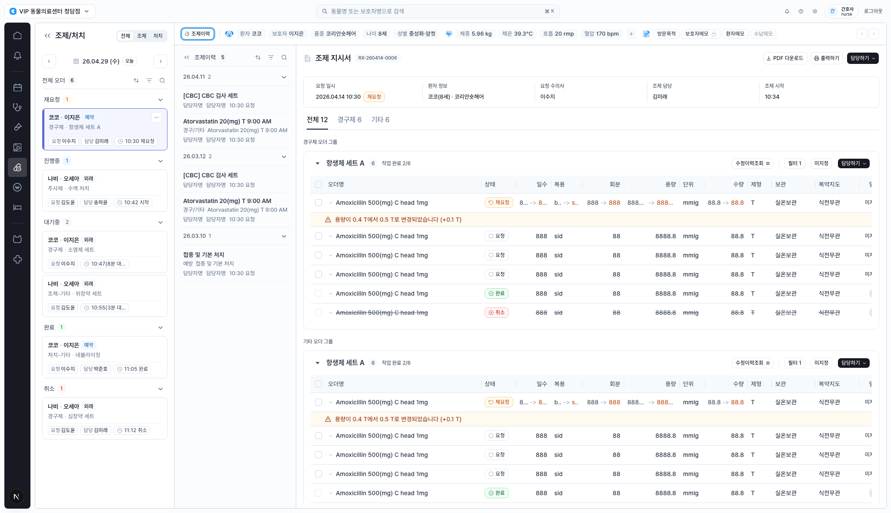
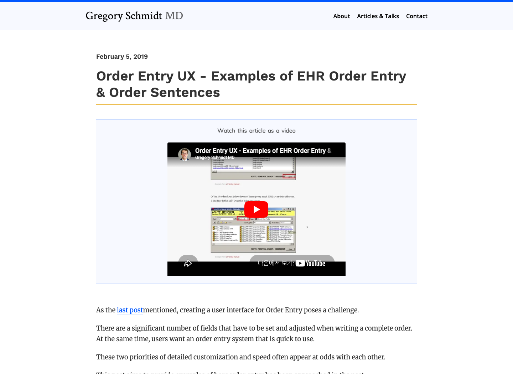
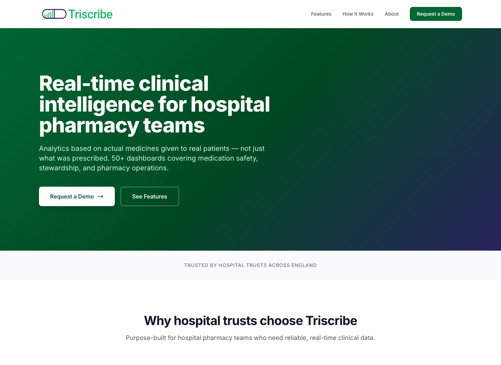
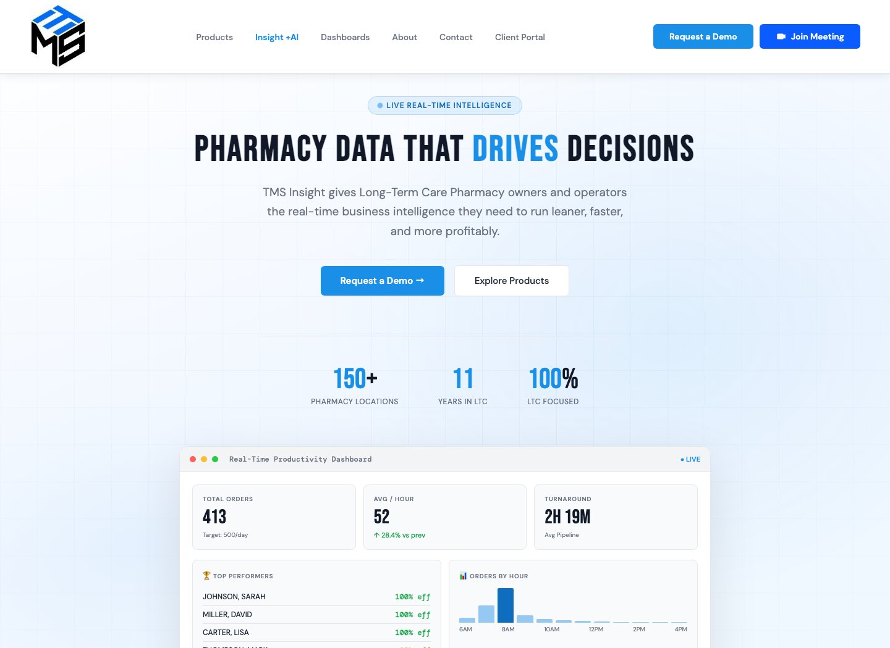

1. 상태 필터를 업무 우선순위 바로 승격 ⭐
중앙 본문 시작부에 재요청, 미지정, 내 담당, 변경 있음 같은 작업 우선순위 pill을 count와 함께 노출합니다.

오늘 작업 12 [재요청 1] [미지정 8] [내 담당 2] [변경 2] 검색
Lazyweb MCP health check가 타임아웃되어 Lazyweb DB 결과는 사용하지 못했습니다. 이번 리포트는 로컬 화면 캡처와 웹 레퍼런스를 기준으로 작성했습니다.

중앙 본문 시작부에 재요청, 미지정, 내 담당, 변경 있음 같은 작업 우선순위 pill을 count와 함께 노출합니다.

오늘 작업 12 [재요청 1] [미지정 8] [내 담당 2] [변경 2] 검색
기본 컬럼은 오더명, 상태, 변경/주의, 처방 요약, 담당, 액션으로 줄이고 세부 투약 필드는 확장 영역으로 묶습니다.

오더명 | 상태 | 변경/주의 | 처방 요약 | 담당 | 액션
변경 사유, 이전값/변경값, 요청자, 확인/문의 액션을 행 아래 검수 카드로 붙여 경고를 처리 흐름으로 연결합니다.

좌측 카드와 상태 그룹 header에 최장 대기 시간, 미지정 여부, 재요청 여부를 같은 위치로 정렬합니다.

개선 포인트가 적용된 standalone HTML 시안도 함께 생성했습니다.
prototype.html 열기| Reference | Source | Context |
|---|---|---|
| Current CLAiR 조제/처치 | Local capture | 현재 구현 화면 |
| Shadcnblocks Data Table 13 | Web | Count tab/filter와 dense table |
| Gregory Schmidt MD Order Entry UX | Web | EHR order entry 정보 과부하 |
| Triscribe | Web | 약제팀용 실시간 clinical intelligence |
| TMS Insight | Web | 약국 운영 dashboard |